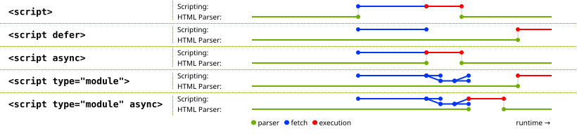

noscript elementtemplate elementslot elementScripts allow authors to add interactivity to their documents.
Authors are encouraged to use declarative alternatives to scripting where possible, as declarative mechanisms are often more maintainable, and many users disable scripting.
For example, instead of using a script to show or hide a section to show more details, the
details element could be used.
Authors are also encouraged to make their applications degrade gracefully in the absence of scripting support.
For example, if an author provides a link in a table header to dynamically resort the table, the link could also be made to function without scripts by requesting the sorted table from the server.
script elementsrc
attribute, depends on the value of the type attribute, but must match
script content restrictions.src
attribute, the element must be either empty or contain only
script documentation that also matches script
content restrictions.type — Type of script
src — Address of the resource
nomodule — Prevents execution in user agents that support module scripts
async — Execute script when available, without blocking while fetching
defer — Defer script execution
blocking — Whether the element is potentially render-blocking
crossorigin — How the element handles requests
referrerpolicy — Referrer policy for fetches initiated by the element
integrity — Integrity metadata used in Subresource Integrity checks [SRI]
fetchpriority — Sets the priority for fetches initiated by the element
[Exposed=Window]
interface HTMLScriptElement : HTMLElement {
[HTMLConstructor] constructor();
[CEReactions, Reflect] attribute DOMString type;
[CEReactions, ReflectURL] attribute USVString src;
[CEReactions, Reflect] attribute boolean noModule;
[CEReactions] attribute boolean async;
[CEReactions, Reflect] attribute boolean defer;
[SameObject, PutForwards=value, Reflect] readonly attribute DOMTokenList blocking;
[CEReactions] attribute DOMString? crossOrigin;
[CEReactions] attribute DOMString referrerPolicy;
[CEReactions, Reflect] attribute DOMString integrity;
[CEReactions] attribute DOMString fetchPriority;
[CEReactions] attribute DOMString text;
static boolean supports(DOMString type);
// also has obsolete members
};The script element allows authors to include dynamic script, instructions to the
user agent, and data blocks in their documents. The element does not represent content for the user.
The script element has two core attributes. The type attribute allows customization of the type of script
represented:
Omitting the attribute, setting it to the empty string, or setting it to a
JavaScript MIME type essence match means that the script is a classic
script, to be interpreted according to the JavaScript Script top-level production. Authors should omit the type attribute instead of redundantly setting it.
Setting the attribute to an ASCII case-insensitive match for "module" means that the script is a JavaScript module script, to
be interpreted according to the JavaScript Module top-level
production.
Setting the attribute to an ASCII case-insensitive match for "importmap" means that the script is an import map, containing
JSON that will be used to control the behavior of module specifier resolution.
Setting the attribute to an ASCII case-insensitive match for "speculationrules" means that the script defines a speculation rule
set, containing JSON that will be used to describe speculative loads.
Setting the attribute to any other value means that the script is a data block, which is not processed by the user agent, but instead by author script or other tools. Authors must use a valid MIME type string that is not a JavaScript MIME type essence match to denote data blocks.
The requirement that data blocks
must be denoted using a valid MIME type string is in place to
avoid potential future collisions. Values for the type
attribute that are not MIME types, like "module" or "importmap", are used by the standard to denote types of scripts which have
special behavior in user agents. By using a valid MIME type string now, you ensure that your
data block will not ever be reinterpreted as a different script type, even in future user
agents.
The second core attribute is the src attribute. It must only be specified for classic scripts and JavaScript module scripts, and denotes that instead of using the element's
child text content as the script content, the script will be fetched from the
specified URL. If src is specified, it must be
a valid non-empty URL potentially surrounded by spaces.
Which other attributes may be specified on a given script element is determined by
the following table:
nomodule
| async
| defer
| blocking
| crossorigin
| referrerpolicy
| integrity
| fetchpriority
| |
|---|---|---|---|---|---|---|---|---|
| External classic scripts | Yes | Yes | Yes | Yes | Yes | Yes | Yes | Yes |
| Inline classic scripts | Yes | · | · | · | Yes* | Yes* | · | ·† |
| External module scripts | · | Yes | · | Yes | Yes | Yes | Yes | Yes |
| Inline module scripts | · | Yes | · | · | Yes* | Yes* | · | ·† |
| Import maps | · | · | · | · | · | · | · | · |
| Speculation rules | · | · | · | · | · | · | · | · |
| Data blocks | · | · | · | · | · | · | · | · |
* Although inline scripts have no initial fetches, the crossorigin and referrerpolicy attribute on inline scripts affects the
credentials mode and referrer
policy used by module imports, including dynamic import().
† Unlike crossorigin and referrerpolicy, fetchpriority does not affect module imports. See some discussion in issue #10276.
The contents of inline script elements, or the external script resource, must
conform with the requirements of the JavaScript specification's Script or Module productions, for classic scripts and JavaScript module scripts respectively. [JAVASCRIPT]
The contents of inline script elements for import
maps must conform with the import map authoring requirements.
The contents of inline script elements for speculation rule sets must conform with the speculation rule set authoring
requirements.
When used to include data blocks, the data must be embedded
inline, the format of the data must be given using the type
attribute, and the contents of the script element must conform to the requirements
defined for the format used.
The nomodule
attribute is a boolean attribute that prevents a script from being executed in user
agents that support module scripts. This allows selective
execution of module scripts in modern user agents and classic scripts in older user agents, as shown below.
The async and
defer attributes are
boolean attributes that indicate how the script should be
evaluated. There are several possible modes that can be selected using these attributes, depending
on the script's type.
For external classic scripts, if the async attribute is present, then the classic script will be
fetched in parallel to parsing and evaluated as soon as it is available (potentially
before parsing completes). If the async attribute is not
present but the defer attribute is present, then the
classic script will be fetched in parallel and evaluated when the page has finished
parsing. If neither attribute is present, then the script is fetched and evaluated immediately,
blocking parsing until these are both complete.
For module scripts, if the async attribute is present, then the module script and all its
dependencies will be fetched in parallel to parsing, and the module script will
be evaluated as soon as it is available (potentially before parsing completes). Otherwise, the
module script and its dependencies will be fetched in parallel to parsing and
evaluated when the page has finished parsing. (The defer
attribute has no effect on module scripts.)
This is all summarized in the following schematic diagram:

The exact processing details for these attributes are, for mostly
historical reasons, somewhat non-trivial, involving a number of aspects of HTML. The
implementation requirements are therefore by necessity scattered throughout the specification. The
algorithms below describe the core of this processing, but
these algorithms reference and are referenced by the parsing rules for script start and end tags in HTML, in foreign content, and in XML, the
rules for the document.write() method, the handling of scripting, etc.
When inserted using the document.write()
method, script elements usually
execute (typically blocking further script execution or HTML parsing). When inserted using the
innerHTML and outerHTML attributes, they do not execute at all.
The defer attribute may be specified even if the async attribute is specified, to cause legacy web browsers that
only support defer (and not async) to fall back to the defer behavior instead of the blocking behavior that
is the default.
The blocking
attribute is a blocking attribute.
The crossorigin attribute is a CORS settings
attribute. For external classic scripts, it controls
whether error information will be exposed, when the script is obtained from other origins. For external module scripts,
it controls the credentials mode used for
the initial fetch of the module source, if cross-origin. For both classic and module scripts, it controls the
credentials mode used for cross-origin
module imports.
Unlike classic scripts, module scripts require the use of the CORS protocol for cross-origin fetching.
The referrerpolicy attribute is a referrer
policy attribute. Its sets the referrer policy used for the initial fetch of
an external script, as well as the fetching of any imported module scripts.
[REFERRERPOLICY]
An example of a script element's referrer policy being used when fetching
imported scripts but not other subresources:
<script referrerpolicy="origin">
fetch('/api/data'); // not fetched with <script>'s referrer policy
import('./utils.mjs'); // is fetched with <script>'s referrer policy ("origin" in this case)
</script>The integrity
attribute sets the integrity metadata
used for the initial fetch of an external script. The value must match the requirements of
the integrity attribute. [SRI]
The fetchpriority attribute is a fetch priority
attribute. Its sets the priority used for
the initial fetch of an external script.
Changing any of these attributes dynamically has no direct effect; these attributes are only used at specific times described in the processing model.
The crossOrigin IDL attribute must reflect
the crossorigin content attribute, limited to
only known values.
The referrerPolicy IDL attribute must
reflect the referrerpolicy content
attribute, limited to only known values.
The fetchPriority IDL attribute must
reflect the fetchpriority
content attribute, limited to only known values.
The async
getter steps are:
If this's force async is true, then return true.
If this's async content attribute is
present, then return true.
Return false.
The async setter steps are:
script.text [ = value ]Returns the child text content of the element.
script.text = valueReplaces the element's children with the text given by value.
HTMLScriptElement.supports(type)Returns true if the given type is a script type supported by the user agent. The
possible script types in this specification are "classic", "module", and "importmap", but others might be added in
the future.
The text
getter steps are to return this's child text content.
The text setter steps are to string replace
all with the given value within this.
The static supports(type) method steps are:
The type argument has to exactly match these values; we do not
perform an ASCII case-insensitive match. This is different from how type content attribute values are treated, and how
DOMTokenList's supports() method
works, but it aligns with the WorkerType enumeration used in the Worker() constructor.
In this example, two script elements are used. One embeds an external
classic script, and the other includes some data as a data block.
<script src="game-engine.js"></script>
<script type="text/x-game-map">
........U.........e
o............A....e
.....A.....AAA....e
.A..AAA...AAAAA...e
</script>The data in this case might be used by the script to generate the map of a video game. The data doesn't have to be used that way, though; maybe the map data is actually embedded in other parts of the page's markup, and the data block here is just used by the site's search engine to help users who are looking for particular features in their game maps.
The following sample shows how a script element can be used to define a function
that is then used by other parts of the document, as part of a classic script. It
also shows how a script element can be used to invoke script while the document is
being parsed, in this case to initialize the form's output.
<script>
function calculate(form) {
var price = 52000;
if (form.elements.brakes.checked)
price += 1000;
if (form.elements.radio.checked)
price += 2500;
if (form.elements.turbo.checked)
price += 5000;
if (form.elements.sticker.checked)
price += 250;
form.elements.result.value = price;
}
</script>
<form name="pricecalc" onsubmit="return false" onchange="calculate(this)">
<fieldset>
<legend>Work out the price of your car</legend>
<p>Base cost: £52000.</p>
<p>Select additional options:</p>
<ul>
<li><label><input type=checkbox name=brakes> Ceramic brakes (£1000)</label></li>
<li><label><input type=checkbox name=radio> Satellite radio (£2500)</label></li>
<li><label><input type=checkbox name=turbo> Turbo charger (£5000)</label></li>
<li><label><input type=checkbox name=sticker> "XZ" sticker (£250)</label></li>
</ul>
<p>Total: £<output name=result></output></p>
</fieldset>
<script>
calculate(document.forms.pricecalc);
</script>
</form>The following sample shows how a script element can be used to include an
external JavaScript module script.
<script type="module" src="app.mjs"></script>This module, and all its dependencies (expressed through JavaScript import statements in the source file), will be fetched. Once the entire
resulting module graph has been imported, and the document has finished parsing, the contents of
app.mjs will be evaluated.
Additionally, if code from another script element in the same Window
imports the module from app.mjs (e.g. via import
"./app.mjs";), then the same JavaScript module script created by the
former script element will be imported.
This example shows how to include a JavaScript module script for modern user agents, and a classic script for older user agents:
<script type="module" src="app.mjs"></script>
<script nomodule defer src="classic-app-bundle.js"></script>In modern user agents that support JavaScript module
scripts, the script element with the nomodule attribute will be ignored, and the
script element with a type of "module" will be fetched and evaluated (as a JavaScript module
script). Conversely, older user agents will ignore the script element with a
type of "module", as that is an
unknown script type for them — but they will have no problem fetching and evaluating the other
script element (as a classic script), since they do not implement the
nomodule attribute.
The following sample shows how a script element can be used to write an inline
JavaScript module script that performs a number of substitutions on the document's
text, in order to make for a more interesting reading experience (e.g. on a news site):
[XKCD1288]
<script type="module">
import { walkAllTextNodeDescendants } from "./dom-utils.mjs";
const substitutions = new Map([
["witnesses", "these dudes I know"]
["allegedly", "kinda probably"]
["new study", "Tumblr post"]
["rebuild", "avenge"]
["space", "spaaace"]
["Google glass", "Virtual Boy"]
["smartphone", "Pokédex"]
["electric", "atomic"]
["Senator", "Elf-Lord"]
["car", "cat"]
["election", "eating contest"]
["Congressional leaders", "river spirits"]
["homeland security", "Homestar Runner"]
["could not be reached for comment", "is guilty and everyone knows it"]
]);
function substitute(textNode) {
for (const [before, after] of substitutions.entries()) {
textNode.data = textNode.data.replace(new RegExp(`\\b${before}\\b`, "ig"), after);
}
}
walkAllTextNodeDescendants(document.body, substitute);
</script>Some notable features gained by using a JavaScript module script include the ability to import
functions from other JavaScript modules, strict mode by default, and how top-level declarations
do not introduce new properties onto the global object. Also note that no matter
where this script element appears in the document, it will not be evaluated until
both document parsing has complete and its dependency (dom-utils.mjs) has
been fetched and evaluated.
The following sample shows how a JSON module script can be imported from inside a JavaScript module script:
<script type="module">
import peopleInSpace from "http://api.open-notify.org/astros.json" with { type: "json" };
const list = document.querySelector("#people-in-space");
for (const { craft, name } of peopleInSpace.people) {
const li = document.createElement("li");
li.textContent = `${name} / ${craft}`;
list.append(li);
}
</script>MIME type checking for module scripts is strict. In order for the fetch of the JSON
module script to succeed, the HTTP response must have a JSON MIME type, for
example Content-Type: text/json. On the other hand, if the with { type: "json" } part of the statement is omitted, it is assumed that the
intent is to import a JavaScript module script, and the fetch will fail if the HTTP
response has a MIME type that is not a JavaScript MIME type.
A script element has several associated pieces of state.
A script element has a parser document, which is either null or a
Document, initially null. It is set by the HTML parser and the
XML parser on script elements they insert, and affects the processing
of those elements. script elements with non-null parser documents are known as parser-inserted.
A script element has a preparation-time document, which is either null
or a Document, initially null. It is used to prevent scripts that move between
documents during preparation from executing.
A script element has a force
async boolean, initially true. It is set to false by the HTML parser and the
XML parser on script elements they insert, and when the element gets an
async content attribute added.
A script element has a from an external
file boolean, initially false. It is determined when the script is prepared, based on the src
attribute of the element at that time.
A script element has a ready to be parser-executed boolean, initially
false. This is used only used for elements that are also parser-inserted, to let the
parser know when to execute the script.
A script element has an already started boolean, initially false.
A script element has a delaying the
load event boolean, initially false.
A script element has a type, which is
either null, "classic", "module", "importmap", or "speculationrules", initially null. It is
determined when the element is prepared, based on
the type attribute of the element at that time.
A script element has a result, which is either "uninitialized", null (representing an error), a script, an import map parse result, or a
speculation rules parse result. It is initially "uninitialized".
A script element has steps to run when the result
is ready, which are a series of steps or null, initially null. To mark as ready a
script element el given a result:
Set el's result to result.
If el's steps to run when the result is ready are not null, then run them.
Set el's steps to run when the result is ready to null.
Set el's delaying the load event to false.
A script element el is implicitly potentially
render-blocking if el's type is
"classic", el is parser-inserted, and
el does not have an async or defer attribute.
The cloning steps for script
elements given node, copy, and subtree are to set
copy's already started to node's already
started.
When an async attribute is added to a
script element el, the user agent must set el's
force async to false.
Whenever a script element el's delaying the load event is true, the user agent must
delay the load event of el's preparation-time document.
The script HTML element post-connection steps, given
insertedNode, are:
If insertedNode is parser-inserted, then return.
Prepare the script element given insertedNode.
The HTML element post-connection steps only run when the inserted element is
still connected, which protects against cases where an earlier-inserted
script removes a later-inserted script. For instance:
<script>
const script1 = document.createElement('script');
script1.innerText = `
document.querySelector('#script2').remove();
`;
const script2 = document.createElement('script');
script2.id = 'script2';
script2.textContent = `console.log('script#2 running')`;
document.body.append(script1, script2);
</script>Nothing is printed to the console in this example. By the time the HTML element
post-connection steps run for the first script that was atomically inserted
by append(), it can observe that the second
script is already connected to the DOM, and it removes it from the DOM.
Because the second script is no longer connected, its HTML
element post-connection steps do not run, and it does not get prepared.
The script HTML element removing steps given removedNode
are:
If removedNode's result is a speculation rules parse result, then:
Unregister speculation rules given removedNode's relevant global object and removedNode's result.
Set removedNode's already started to false.
Set removedNode's result to null.
The script children changed steps given changedNode
are:
Run the script HTML element post-connection steps, given
changedNode.
This has an interesting implication on the execution order of a script element
and any newly-inserted child script elements. Consider the following snippet:
<script id=outer-script></script>
<script>
const outerScript = document.querySelector('#outer-script');
const start = new Text('console.log(1);');
const innerScript = document.createElement('script');
innerScript.textContent = `console.log('inner script executing')`;
const end = new Text('console.log(2);');
outerScript.append(start, innerScript, end);
// Logs:
// 1
// 2
// inner script executing
</script>By the time the second script block executes, the outer-script has
already been prepared, but because it is empty,
it did not execute and therefore is not marked as already started. The atomic
insertion of the Text nodes and nested script element have the
following effects:
All three child nodes get atomically inserted as children of outer-script; all of their insertion
steps run, which have no observable consequences in this case.
The outer-script's children changed steps run, which
prepares that script; because its body is now
non-empty, this executes the contents of the two Text nodes, in order.
The script HTML element post-connection steps finally run for
innerScript, causing its body to execute.
The following attribute change
steps, given element, localName, oldValue,
value, and namespace, are used for all script elements:
If namespace is not null, then return.
If localName is src and
element is connected, then run the script HTML element
post-connection steps, given element.
To prepare the script element given a script
element el:
If el's already started is true, then return.
Let parser document be el's parser document.
Set el's parser document to null.
This is done so that if parser-inserted script elements fail to run
when the parser tries to run them, e.g. because they are empty or specify an unsupported
scripting language, another script can later mutate them and cause them to run again.
If parser document is non-null and el does not have an async attribute, then set el's force async to true.
This is done so that if a parser-inserted script element fails to
run when the parser tries to run it, but it is later executed after a script dynamically
updates it, it will execute in an async fashion even if the async attribute isn't set.
Let source text be el's child text content.
If el has no src attribute, and source text is the empty string,
then return.
If el is not connected, then return.
If any of the following are true:
el has a type attribute whose value is
the empty string;
el has no type attribute but it has a
language attribute and that attribute's
value is the empty string; or
then let the script block's type string for this script element be
"text/javascript".
Otherwise, if el has a type attribute, then
let the script block's type string be the value of that attribute with leading and trailing ASCII whitespace
stripped.
Otherwise, el has a non-empty language
attribute; let the script block's type string be the concatenation of "text/" and the value of el's language attribute.
The language attribute is never
conforming, and is always ignored if there is a type
attribute present.
If the script block's type string is a JavaScript MIME type essence
match, then set el's type to "classic".
Otherwise, if the script block's type string is an ASCII
case-insensitive match for the string "module", then set
el's type to "module".
Otherwise, if the script block's type string is an ASCII
case-insensitive match for the string "importmap", then set
el's type to "importmap".
Otherwise, if the script block's type string is an ASCII
case-insensitive match for the string "speculationrules", then set
el's type to "speculationrules".
Otherwise, return. (No script is executed, and el's type is left as null.)
If parser document is non-null, then set el's parser document back to parser document and set el's force async to false.
Set el's already started to true.
Set el's preparation-time document to its node document.
If parser document is non-null, and parser document is not equal to el's preparation-time document, then return.
If scripting is disabled for el, then return.
The definition of scripting is
disabled means that, amongst others, the following scripts will not execute: scripts in
XMLHttpRequest's responseXML
documents, scripts in DOMParser-created documents, scripts in documents created by
XSLTProcessor's transformToDocument feature, and scripts
that are first inserted by a script into a Document that was created using the
createDocument() API. [XHR]
[DOMPARSING] [XSLTP] [DOM]
If el has a nomodule content attribute
and its type is "classic",
then return.
This means specifying nomodule on a
module script has no effect; the algorithm continues onward.
Let cspType be "script speculationrules" if
el's type is "speculationrules"; otherwise, "script".
If el does not have a If el has an Let for be the value of el's Let event be the value of el's Strip leading and trailing ASCII whitespace from event and
for. If for is not an ASCII case-insensitive match for the string
" If event is not an ASCII case-insensitive match for either the
string " If el has a If el does not have a If el's type is " Let classic script CORS setting be the current state of el's Let module script credentials mode be the CORS settings attribute
credentials mode for el's Let cryptographic nonce be el's [[CryptographicNonce]]
internal slot's value. If el has an Otherwise, let integrity metadata be the empty string. Let referrer policy be the current state of el's Let fetch priority be the current state of el's Let parser metadata be " Let options be a script fetch options whose cryptographic nonce is cryptographic
nonce, integrity metadata is
integrity metadata, parser
metadata is parser metadata, credentials mode is module script
credentials mode, referrer
policy is referrer policy, and fetch priority is fetch
priority. Let settings object be el's node document's
relevant settings object. If el has a If el's type is " External import maps and speculation rules are not currently supported. See WICG/import-maps issue #235 and WICG/nav-speculation issue #348
for discussions on adding support. Let src be the value of el's If src is the empty string, then queue an element task on the
DOM manipulation task source given el to fire an event named Set el's from an external file
to true. Let url be the result of encoding-parsing a URL given
src, relative to el's node document. If url is failure, then queue an element task on the DOM
manipulation task source given el to fire
an event named If el is potentially render-blocking, then block
rendering on el. Set el's delaying the load
event to true. If el is currently render-blocking, then set
options's
render-blocking to true. Let onComplete given result be the following steps: Mark as ready el given result. Switch on el's type: Fetch a classic script given url, settings object,
options, classic script CORS setting, encoding, and
onComplete. If el does not have an Fetch an external module script graph given url, settings
object, options, and onComplete. For performance reasons, user agents may start fetching the classic script or module graph
(as defined above) as soon as the If el does not have a Let base URL be el's node document's document
base URL. Switch on el's type: Let script be the result of creating a classic script using
source text, settings object, base URL, and
options. Mark as ready el given script. Set el's delaying the load
event to true. If el is potentially render-blocking, then: Block rendering on el. Set options's render-blocking to
true. Fetch an inline module script graph, given source text,
base URL, settings object, options, and with the
following steps given result: Queue an element task on the networking task source
given el to perform the following steps: Mark as ready el given result. Queueing a task here means that, even if the inline module script has
no dependencies or synchronously results in a parse error, we won't proceed to
execute the script element synchronously. Let result be the result of creating an import map parse result given source text and
base URL. Mark as ready el given result. Let result be the result of creating a speculation rules parse result given source text
and el's node document. Mark as ready el given result. If el's type is " If el has an Let scripts be el's preparation-time document's
set of scripts that will execute as soon as possible. Append el to scripts. Set el's steps to run when the result is ready to the
following: Remove el from
scripts. Otherwise, if el is not
parser-inserted: Let scripts be el's preparation-time document's
list of scripts that will execute in order as soon as possible. Append el to scripts. Set el's steps to run when the result is ready to the
following: If scripts[0] is not el, then abort these steps. While scripts is not empty, and scripts[0]'s result is not " Execute the script element scripts[0]. Remove scripts[0]. Otherwise, if el has a
Append el to its parser
document's list of scripts that will execute when the document has finished
parsing. Set el's steps to run when the result is ready to the
following: set el's ready to be parser-executed to true. (The parser
will handle executing the script.) Otherwise: Set el's parser document's pending parsing-blocking
script to el. Block rendering on el. Set el's steps to run when the result is ready to the
following: set el's ready to be parser-executed to true. (The parser
will handle executing the script.) Otherwise: If all of the following are true: then: Set el's parser document's pending parsing-blocking
script to el. Set el's ready to be parser-executed to true. (The parser
will handle executing the script.) Otherwise, immediately execute the
script element el, even if other scripts are already executing.src content attribute, and the Blocked" when given el, cspType, and source
text, then return. [CSP]event attribute and a for attribute, and el's type is "classic", then:for attribute.event attribute.window", then return.onload" or the string "onload()", then
return.charset attribute, then let
encoding be the result of getting an encoding from the value of the
charset attribute.charset
attribute, or if getting an encoding failed, then let encoding be
el's node document's the
encoding.module", this encoding will be ignored.crossorigin content attribute.crossorigin content attribute.integrity attribute,
then let integrity metadata be that attribute's value.referrerpolicy content attribute.fetchpriority content attribute.parser-inserted" if
el is parser-inserted, and "not-parser-inserted"
otherwise.src content attribute, then:importmap" or "speculationrules", then queue an
element task on the DOM manipulation task source given el to
fire an event named error at el, and return.src attribute.error
at el, and return.error at el, and
return.classic"module"integrity
attribute, then set options's integrity metadata to the result of
resolving a module integrity metadata with url and settings
object.src attribute is set,
instead, in the hope that el will become connected (and that the crossorigin attribute won't change value in the
meantime). Either way, once el becomes connected, the load must have
started as described in this step. If the UA performs such prefetching, but el
never becomes connected, or the src attribute is
dynamically changed, or the crossorigin attribute is dynamically changed, then the
user agent will not execute the script so obtained, and the fetching process will have been
effectively wasted.src content
attribute:classic"module"importmap"speculationrules"classic" and el has a src
attribute, or el's type is "module":async attribute or el's force async is true:uninitialized":defer attribute or el's type is "module":classic";
Each Document has a pending parsing-blocking script, which is a
script element or null, initially null.
Each Document has a set of scripts that will execute as soon as
possible, which is a set of script elements, initially empty.
Each Document has a list of scripts that will execute in order as soon as
possible, which is a list of script elements, initially
empty.
Each Document has a list of scripts that will execute when the document has
finished parsing, which is a list of script elements, initially
empty.
If a script element that blocks a parser gets moved to another
Document before it would normally have stopped blocking that parser, it nonetheless
continues blocking that parser until the condition that causes it to be blocking the parser no
longer applies (e.g., if the script is a pending parsing-blocking script because the
original Document has a style sheet that is blocking scripts when it was
parsed, but then the script is moved to another Document before the blocking style
sheet(s) loaded, the script still blocks the parser until the style sheets are all loaded, at
which time the script executes and the parser is unblocked).
To execute the script element given a
script element el:
Let document be el's node document.
If el's preparation-time document is not equal to document, then return.
Unblock rendering on el.
If el's result is null, then fire an event named error
at el, and return.
If el's from an external file is
true, or el's type is "module", then increment document's ignore-destructive-writes
counter.
Switch on el's type:
classic"Let oldCurrentScript be the value to which document's currentScript object was most recently
set.
If el's root is not a shadow root, then
set document's currentScript
attribute to el. Otherwise, set it to null.
This does not use the in a document tree check, as
el could have been removed from the document prior to execution, and in that
scenario currentScript still needs to
point to it.
Run the classic script given by el's result.
Set document's currentScript attribute to
oldCurrentScript.
module"Assert: document's currentScript attribute is null.
Run the module script given by el's result.
importmap"Register an import map given el's relevant global object and el's result.
speculationrules"Register speculation rules given el's relevant global object and el's result.
Decrement the ignore-destructive-writes counter of document, if it was incremented in the earlier step.
If el's from an external file is
true, then fire an event named load at el.
User agents are not required to support JavaScript. This standard needs to be updated
if a language other than JavaScript comes along and gets similar wide adoption by web browsers.
Until such a time, implementing other languages is in conflict with this standard, given the
processing model defined for the script element.
Servers should use text/javascript for JavaScript resources, in accordance with
Updates to ECMAScript Media Types. Servers should not use other
JavaScript MIME types for JavaScript resources, and
must not use non-JavaScript MIME types.
[RFC9239]
For external JavaScript resources, MIME type parameters in `Content-Type` headers
are generally ignored. (In some cases the `charset` parameter has an
effect.) However, for the script element's type attribute they are significant; it uses the JavaScript
MIME type essence match concept.
For example, scripts with their type
attribute set to "text/javascript; charset=utf-8" will not be
evaluated, even though that is a valid JavaScript MIME type when parsed.
Furthermore, again for external JavaScript resources, special considerations apply around
`Content-Type` header processing as detailed in the prepare the script
element algorithm and Fetch. [FETCH]
script elementsThe easiest and safest way to avoid the rather strange restrictions described in
this section is to always escape an ASCII case-insensitive match for "<!--" as "\x3C!--", "<script" as "\x3Cscript", and "</script" as "\x3C/script" when these sequences appear
in literals in scripts (e.g. in strings, regular expressions, or comments), and to avoid writing
code that uses such constructs in expressions. Doing so avoids the pitfalls that the restrictions
in this section are prone to triggering: namely, that, for historical reasons, parsing of
script blocks in HTML is a strange and exotic practice that acts unintuitively in the
face of these sequences.
The script element's descendant text content must match the script production in the following ABNF, the character set for which is Unicode.
[ABNF]
script = outer *( comment-open inner comment-close outer )
outer = < any string that doesn't contain a substring that matches not-in-outer >
not-in-outer = comment-open
inner = < any string that doesn't contain a substring that matches not-in-inner >
not-in-inner = comment-close / script-open
comment-open = "<!--"
comment-close = "-->"
script-open = "<" s c r i p t tag-end
s = %x0053 ; U+0053 LATIN CAPITAL LETTER S
s =/ %x0073 ; U+0073 LATIN SMALL LETTER S
c = %x0043 ; U+0043 LATIN CAPITAL LETTER C
c =/ %x0063 ; U+0063 LATIN SMALL LETTER C
r = %x0052 ; U+0052 LATIN CAPITAL LETTER R
r =/ %x0072 ; U+0072 LATIN SMALL LETTER R
i = %x0049 ; U+0049 LATIN CAPITAL LETTER I
i =/ %x0069 ; U+0069 LATIN SMALL LETTER I
p = %x0050 ; U+0050 LATIN CAPITAL LETTER P
p =/ %x0070 ; U+0070 LATIN SMALL LETTER P
t = %x0054 ; U+0054 LATIN CAPITAL LETTER T
t =/ %x0074 ; U+0074 LATIN SMALL LETTER T
tag-end = %x0009 ; U+0009 CHARACTER TABULATION (tab)
tag-end =/ %x000A ; U+000A LINE FEED (LF)
tag-end =/ %x000C ; U+000C FORM FEED (FF)
tag-end =/ %x0020 ; U+0020 SPACE
tag-end =/ %x002F ; U+002F SOLIDUS (/)
tag-end =/ %x003E ; U+003E GREATER-THAN SIGN (>)When a script element contains script documentation, there are
further restrictions on the contents of the element, as described in the section below.
The following script illustrates this issue. Suppose you have a script that contains a string, as in:
const example = 'Consider this string: <!-- <script>';
console.log(example);If one were to put this string directly in a script block, it would violate the
restrictions above:
<script>
const example = 'Consider this string: <!-- <script>';
console.log(example);
</script>The bigger problem, though, and the reason why it would violate those restrictions, is that
actually the script would get parsed weirdly: the script block above is not terminated.
That is, what looks like a "</script>" end tag in this snippet is
actually still part of the script block. The script doesn't execute (since it's not
terminated); if it somehow were to execute, as it might if the markup looked as follows, it would
fail because the script (highlighted here) is not valid JavaScript:
<script>
const example = 'Consider this string: <!-- <script>';
console.log(example);
</script>
<!-- despite appearances, this is actually part of the script still! -->
<script>
... // this is the same script block still...
</script>What is going on here is that for legacy reasons, "<!--" and "<script" strings in script elements in HTML need to be balanced
in order for the parser to consider closing the block.
By escaping the problematic strings as mentioned at the top of this section, the problem is avoided entirely:
<script>
// Note: `\x3C` is an escape sequence for `<`.
const example = 'Consider this string: \x3C!-- \x3Cscript>';
console.log(example);
</script>
<!-- this is just a comment between script blocks -->
<script>
... // this is a new script block
</script>It is possible for these sequences to naturally occur in script expressions, as in the following examples:
if (x<!--y) { ... }
if ( player<script ) { ... }In such cases the characters cannot be escaped, but the expressions can be rewritten so that the sequences don't occur, as in:
if (x < !--y) { ... }
if (!--y > x) { ... }
if (!(--y) > x) { ... }
if (player < script) { ... }
if (script > player) { ... }Doing this also avoids a different pitfall as well: for related historical reasons, the string "<!--" in classic scripts is actually treated as a line comment start, just like "//".
If a script element's src attribute is
specified, then the contents of the script element, if any, must be such that the
value of the text IDL attribute, which is derived from the
element's contents, matches the documentation production in the following
ABNF, the character set for which is Unicode. [ABNF]
documentation = *( *( space / tab / comment ) [ line-comment ] newline )
comment = slash star *( not-star / star not-slash ) 1*star slash
line-comment = slash slash *not-newline
; characters
tab = %x0009 ; U+0009 CHARACTER TABULATION (tab)
newline = %x000A ; U+000A LINE FEED (LF)
space = %x0020 ; U+0020 SPACE
star = %x002A ; U+002A ASTERISK (*)
slash = %x002F ; U+002F SOLIDUS (/)
not-newline = %x0000-0009 / %x000B-10FFFF
; a scalar value other than U+000A LINE FEED (LF)
not-star = %x0000-0029 / %x002B-10FFFF
; a scalar value other than U+002A ASTERISK (*)
not-slash = %x0000-002E / %x0030-10FFFF
; a scalar value other than U+002F SOLIDUS (/)This corresponds to putting the contents of the element in JavaScript comments.
This requirement is in addition to the earlier restrictions on the syntax of
contents of script elements.
This allows authors to include documentation, such as license information or API information,
inside their documents while still referring to external script files. The syntax is constrained
so that authors don't accidentally include what looks like valid script while also providing a
src attribute.
<script src="cool-effects.js">
// create new instances using:
// var e = new Effect();
// start the effect using .play, stop using .stop:
// e.play();
// e.stop();
</script>script elements and XSLTThis section is non-normative.
This specification does not define how XSLT interacts with the script element.
However, in the absence of another specification actually defining this, here are some guidelines
for implementers, based on existing implementations:
When an XSLT transformation program is triggered by an <?xml-stylesheet?> processing instruction and the browser implements a
direct-to-DOM transformation, script elements created by the XSLT processor need to
have its parser document set correctly, and run in document order (modulo scripts
marked defer or async), immediately, as the transformation is
occurring.
The XSLTProcessor transformToDocument() method adds elements
to a Document object with a null browsing
context, and, accordingly, any script elements they create need to have
their already started set to true in the prepare the script element
algorithm and never get executed (scripting is
disabled). Such script elements still need to have their parser
document set, though, such that their async IDL
attribute will return false in the absence of an async
content attribute.
The XSLTProcessor transformToFragment() method needs to
create a fragment that is equivalent to one built manually by creating the elements using document.createElementNS(). For instance, it needs
to create script elements with null parser document and with their
already started set to false, so that they will execute when the fragment is
inserted into a document.
The main distinction between the first two cases and the last case is that the first two
operate on Documents and the last operates on a fragment.
noscript elementselect element inner content elements.optgroup element inner content elements.head element of an HTML document, if there are no ancestor noscript elements.noscript elements.head element: in any order, zero or more link elements, zero or more style elements, and zero or more meta elements.head element: transparent, but there must be no noscript element descendants.HTMLElement.The noscript element represents nothing if scripting is enabled, and represents its children if
scripting is disabled. It is used to present different
markup to user agents that support scripting and those that don't support scripting, by affecting
how the document is parsed.
When used in HTML documents, the allowed content model is as follows:
head element, if scripting is
disabled for the noscript elementThe noscript element must contain only link, style,
and meta elements.
head element, if scripting is enabled
for the noscript elementThe noscript element must contain only text, except that invoking the
HTML fragment parsing algorithm with
the noscript element as the context
element and the text contents as the input must result in a list of nodes
that consists only of link, style, and meta elements that
would be conforming if they were children of the noscript element, and no parse errors.
head elements, if scripting is
disabled for the noscript elementThe noscript element's content model is transparent, with the
additional restriction that a noscript element must not have a noscript
element as an ancestor (that is, noscript can't be nested).
head elements, if scripting is
enabled for the noscript elementThe noscript element must contain only text, except that the text must be such
that running the following algorithm results in a conforming document with no
noscript elements and no script elements, and such that no step in the
algorithm throws an exception or causes an HTML parser to flag a parse
error:
script element from the document.noscript element in the document. For every
noscript element in that list, perform the following steps:
noscript
element.outerHTML attribute of the
noscript element to the value of s. (This, as a side-effect, causes
the noscript element to be removed from the document.)All these contortions are required because, for historical reasons, the
noscript element is handled differently by the HTML parser based on
whether scripting was enabled or not when the parser was
invoked.
The noscript element must not be used in XML documents.
The noscript element is only effective in the HTML
syntax, it has no effect in the XML syntax. This is because the way it works
is by essentially "turning off" the parser when scripts are enabled, so that the contents of the
element are treated as pure text and not as real elements. XML does not define a mechanism by
which to do this.
The noscript element has no other requirements. In particular, children of the
noscript element are not exempt from form submission, scripting, and so
forth, even when scripting is enabled for the element.
In the following example, a noscript element is
used to provide fallback for a script.
<form action="calcSquare.php">
<p>
<label for=x>Number</label>:
<input id="x" name="x" type="number">
</p>
<script>
var x = document.getElementById('x');
var output = document.createElement('p');
output.textContent = 'Type a number; it will be squared right then!';
x.form.appendChild(output);
x.form.onsubmit = function () { return false; }
x.oninput = function () {
var v = x.valueAsNumber;
output.textContent = v + ' squared is ' + v * v;
};
</script>
<noscript>
<input type=submit value="Calculate Square">
</noscript>
</form>When script is disabled, a button appears to do the calculation on the server side. When script is enabled, the value is computed on-the-fly instead.
The noscript element is a blunt instrument. Sometimes, scripts might be enabled,
but for some reason the page's script might fail. For this reason, it's generally better to avoid
using noscript, and to instead design the script to change the page from being a
scriptless page to a scripted page on the fly, as in the next example:
<form action="calcSquare.php">
<p>
<label for=x>Number</label>:
<input id="x" name="x" type="number">
</p>
<input id="submit" type=submit value="Calculate Square">
<script>
var x = document.getElementById('x');
var output = document.createElement('p');
output.textContent = 'Type a number; it will be squared right then!';
x.form.appendChild(output);
x.form.onsubmit = function () { return false; }
x.oninput = function () {
var v = x.valueAsNumber;
output.textContent = v + ' squared is ' + v * v;
};
var submit = document.getElementById('submit');
submit.parentNode.removeChild(submit);
</script>
</form>The above technique is also useful in XML documents, since noscript
is not allowed there.
template elementcolgroup element that doesn't have a span attribute.shadowrootmode — Enables streaming declarative shadow roots
shadowrootdelegatesfocus — Sets delegates focus on a declarative shadow root
shadowrootclonable — Sets clonable on a declarative shadow root
shadowrootserializable — Sets serializable on a declarative shadow root
shadowrootcustomelementregistry — Enables declarative shadow roots to indicate they will use a custom element registry
[Exposed=Window]
interface HTMLTemplateElement : HTMLElement {
[HTMLConstructor] constructor();
readonly attribute DocumentFragment content;
[CEReactions] attribute DOMString shadowRootMode;
[CEReactions, Reflect] attribute boolean shadowRootDelegatesFocus;
[CEReactions, Reflect] attribute boolean shadowRootClonable;
[CEReactions, Reflect] attribute boolean shadowRootSerializable;
[CEReactions, Reflect] attribute DOMString shadowRootCustomElementRegistry;
};The template element is used to declare fragments of HTML that can be cloned and
inserted in the document by script.
In a rendering, the template element represents nothing.
The shadowrootmode content attribute is an
enumerated attribute with the following keywords and states:
| Keyword | State | Brief description |
|---|---|---|
open
| Open | The template element represents an open declarative shadow root. |
closed
| Closed | The template element represents a closed declarative shadow root. |
The shadowrootmode attribute's invalid value default and missing value default are both the None state.
The shadowrootdelegatesfocus content
attribute is a boolean attribute.
The shadowrootclonable content attribute is a
boolean attribute.
The shadowrootserializable content
attribute is a boolean attribute.
The shadowrootcustomelementregistry
content attribute is a boolean attribute.
The template contents of a template element are not children of the element itself.
It is also possible, as a result of DOM manipulation, for a template
element to contain Text nodes and element nodes; however, having any is a violation
of the template element's content model, since its content model is defined as nothing.
For example, consider the following document:
<!doctype html>
<html lang="en">
<head>
<title>Homework</title>
<body>
<template id="template"><p>Smile!</p></template>
<script>
let num = 3;
const fragment = document.getElementById('template').content.cloneNode(true);
while (num-- > 1) {
fragment.firstChild.before(fragment.firstChild.cloneNode(true));
fragment.firstChild.textContent += fragment.lastChild.textContent;
}
document.body.appendChild(fragment);
</script>
</html>The p element in the template is not a child of the
template in the DOM; it is a child of the DocumentFragment returned by
the template element's content IDL
attribute.
If the script were to call appendChild() on the
template element, that would add a child to the template element (as
for any other element); however, doing so is a violation of the template element's
content model.
template.contentReturns the template contents (a DocumentFragment).
Each template element has an associated DocumentFragment object that
is its template contents. The template contents have no conformance requirements. When a template element
is created, the user agent must run the following steps to establish the template
contents:
Let document be the template element's node
document's appropriate template contents owner document.
Create a DocumentFragment object whose node document is
document and host is the
template element.
Set the template element's template contents to the newly
created DocumentFragment object.
A Document document's appropriate template contents owner
document is the Document returned by the following algorithm:
If document is not a Document created by this algorithm:
If document does not yet have an associated inert template document:
Let newDocument be a new Document (whose browsing context is null). This is "a
Document created by this algorithm" for the purposes of the step above.
If document is an HTML document, then mark newDocument as an HTML document also.
Set document's associated inert template document to newDocument.
Set document to document's associated inert template document.
Each Document not created by this algorithm thus gets a single
Document to act as its proxy for owning the template contents of all
its template elements, so that they aren't in a browsing context and
thus remain inert (e.g. scripts do not run). Meanwhile, template elements inside
Document objects that are created by this algorithm just reuse the same
Document owner for their contents.
Return document.
The adopting steps
(with node and oldDocument as parameters) for template elements
are the following:
Let document be node's node document's appropriate template contents owner document.
node's node document is the Document object
that node was just adopted into.
Adopt node's
template contents (a DocumentFragment object) into
document.
The content getter steps are:
Assert: this's template contents is not a
ShadowRoot node.
Return this's template contents.
The shadowRootMode IDL attribute must
reflect the shadowrootmode content
attribute, limited to only known values.
The shadowRootCustomElementRegistry IDL attribute intentionally does not have a boolean type so it can be extended.
The cloning steps for template
elements given node, copy, and subtree are:
If subtree is false, then return.
For each child of node's template contents's children, in tree order: clone a node given child with document set to copy's template contents's node document, subtree set to true, and parent set to copy's template contents.
In this example, a script populates a table four-column with data from a data structure, using
a template to provide the element structure instead of manually generating the
structure from markup.
<!DOCTYPE html>
<html lang='en'>
<title>Cat data</title>
<script>
// Data is hard-coded here, but could come from the server
var data = [
{ name: 'Pillar', color: 'Ticked Tabby', sex: 'Female (neutered)', legs: 3 },
{ name: 'Hedral', color: 'Tuxedo', sex: 'Male (neutered)', legs: 4 },
];
</script>
<table>
<thead>
<tr>
<th>Name <th>Color <th>Sex <th>Legs
<tbody>
<template id="row">
<tr><td><td><td><td>
</template>
</table>
<script>
var template = document.querySelector('#row');
for (var i = 0; i < data.length; i += 1) {
var cat = data[i];
var clone = template.content.cloneNode(true);
var cells = clone.querySelectorAll('td');
cells[0].textContent = cat.name;
cells[1].textContent = cat.color;
cells[2].textContent = cat.sex;
cells[3].textContent = cat.legs;
template.parentNode.appendChild(clone);
}
</script>This example uses cloneNode() on the
template's contents; it could equivalently have used document.importNode(), which does the same thing. The
only difference between these two APIs is when the node document is updated: with
cloneNode() it is updated when the nodes are appended
with appendChild(), with document.importNode() it is updated when the nodes are
cloned.
template elements with XSLT and XPathThis section is non-normative.
This specification does not define how XSLT and XPath interact with the template
element. However, in the absence of another specification actually defining this, here are some
guidelines for implementers, which are intended to be consistent with other processing described
in this specification:
An XSLT processor based on an XML parser that acts as described
in this specification needs to act as if template elements contain as
descendants their template contents for the purposes of the transform.
An XSLT processor that outputs a DOM needs to ensure that nodes that would go into a
template element are instead placed into the element's template
contents.
XPath evaluation using the XPath DOM API when applied to a Document parsed
using the HTML parser or the XML parser described in this specification
needs to ignore template contents.
slot elementname — Name of shadow tree slot
[Exposed=Window]
interface HTMLSlotElement : HTMLElement {
[HTMLConstructor] constructor();
[CEReactions, Reflect] attribute DOMString name;
sequence<Node> assignedNodes(optional AssignedNodesOptions options = {});
sequence<Element> assignedElements(optional AssignedNodesOptions options = {});
undefined assign((Element or Text)... nodes);
};
dictionary AssignedNodesOptions {
boolean flatten = false;
};The slot element defines a slot. It is
typically used in a shadow tree. A slot element represents
its assigned nodes, if any, and its contents otherwise.
The name content
attribute may contain any string value. It represents a slot's
name.
The name attribute is used to assign slots to other elements: a slot element with a
name attribute creates a named slot to which any element is assigned if that element has a slot attribute whose
value matches that name attribute's value, and the
slot element is a child of the shadow tree whose root's
host has that corresponding slot attribute value.
slot.nameslot.assignedNodes()slot.assignedNodes({ flatten: true })slot elements encountered therein, recursively,
until there are no slot elements left.slot.assignedElements()slot.assignedElements({ flatten: true })assignedNodes({ flatten: true
}), limited to elements.slot.assign(...nodes)Sets slot's manually assigned nodes to the given nodes.
The slot element has manually assigned
nodes, which is an ordered set of slottables set by assign().
This set is initially empty.
The manually assigned nodes set can be implemented using weak references to the slottables, because this set is not directly accessible from script.
The assignedNodes(options) method steps
are:
If options["flatten"] is
false, then return this's assigned nodes.
Return the result of finding flattened slottables with this.
The assignedElements(options) method
steps are:
If options["flatten"] is
false, then return this's assigned nodes, filtered to contain only
Element nodes.
Return the result of finding flattened slottables with this,
filtered to contain only Element nodes.
The assign(...nodes) method steps are:
For each node of this's manually assigned nodes, set node's manual slot assignment to null.
Let nodesSet be a new ordered set.
For each node of nodes:
If node's manual slot assignment refers to a slot, then remove node from that slot's manually assigned nodes.
Set node's manual slot assignment to this.
Append node to nodesSet.
Set this's manually assigned nodes to nodesSet.
Run assign slottables for a tree for this's root.